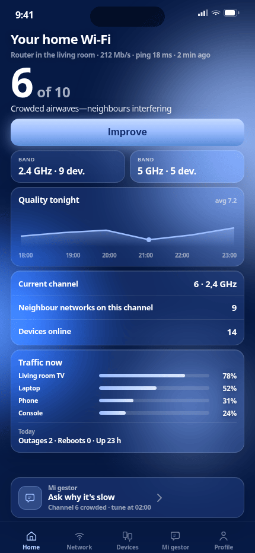
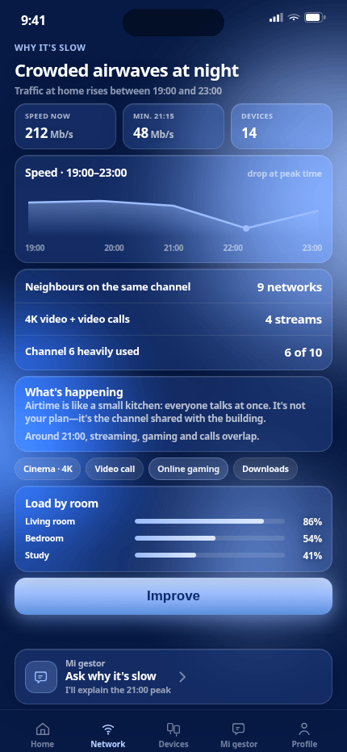
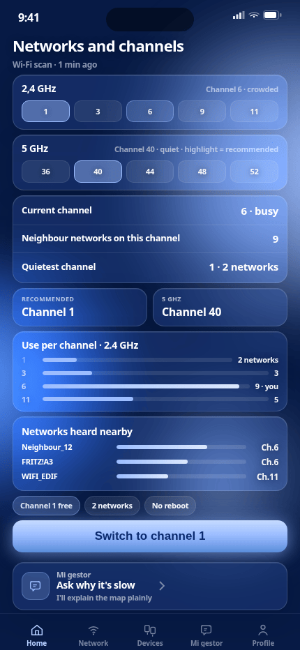
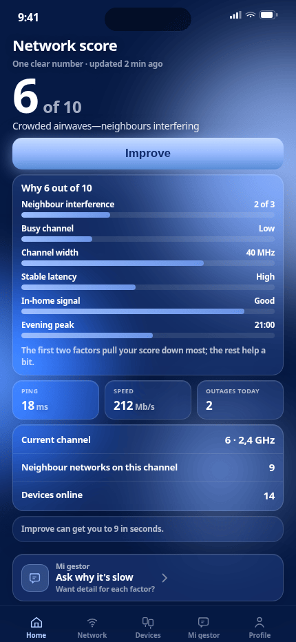
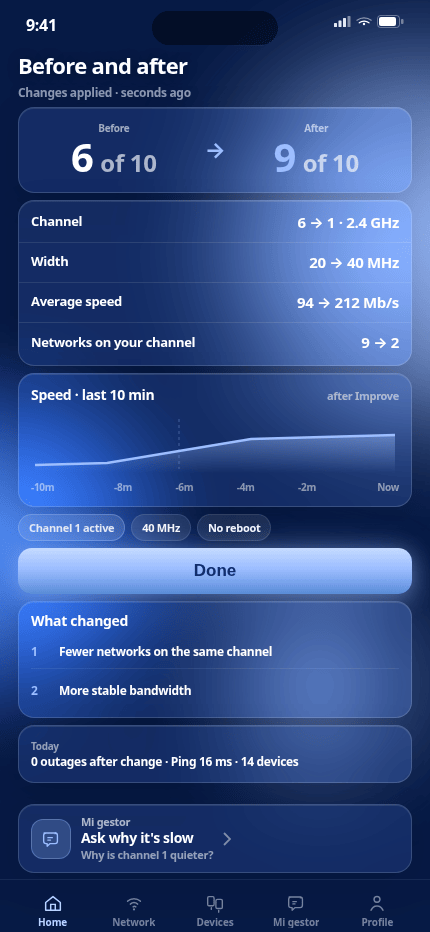
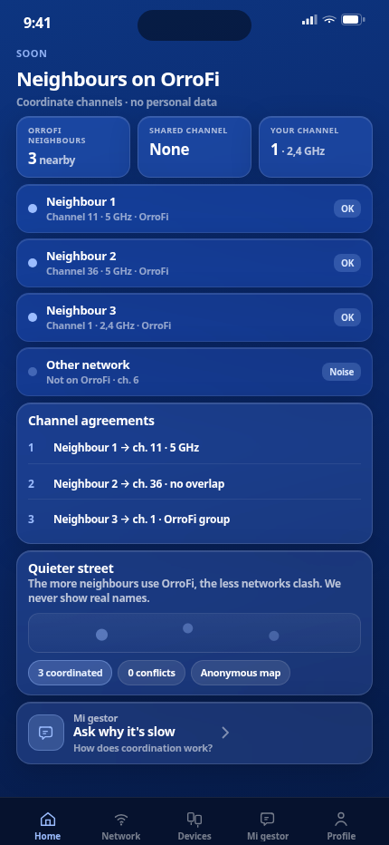
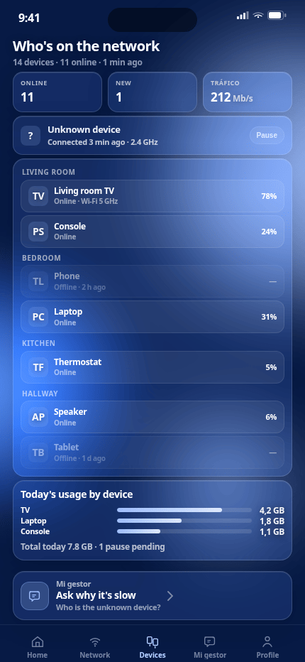
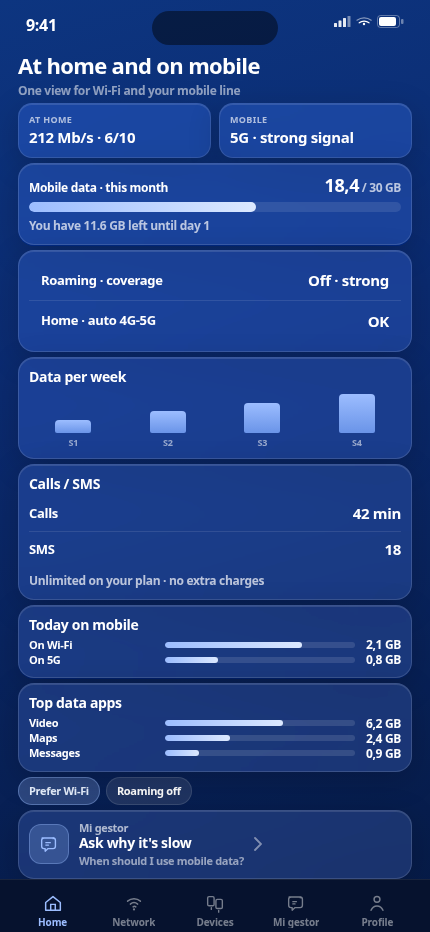
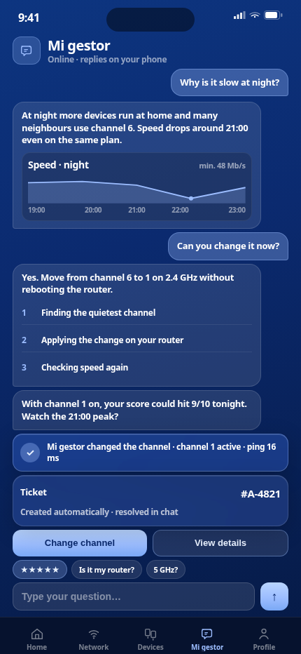
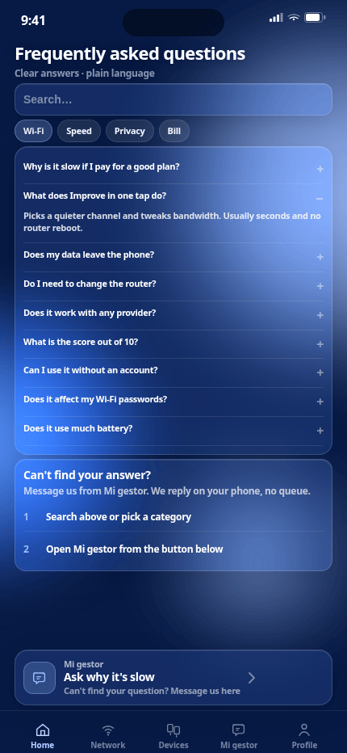

Your Wi‑Fi can work better. OrroFi knows how.
The app listens to the air around your home, finds what is getting in the network's way, and puts it right with one tap. No settings, no calls to support, no technician at the door.

Why Wi‑Fi slows down at home
Evening. Everyone is home: someone is watching a film, someone is on a video call, the children are playing online. And that is exactly when the picture breaks into squares and the voice on the phone starts to stutter.
Most of the time it is not the plan or the router. Just next door, one floor up and across the street, neighbours live, and their routers speak on the same wave as yours. The air in the house is like a cramped kitchen where everyone talks at once: each person hears everyone, and no one understands anyone.

Wi‑Fi without interference
OrroFi looks at which networks are sounding nearby and on which channels. A channel is the band of air the router uses to talk to your devices. The app picks the quietest channel and moves your router onto it. You set nothing up: the network is simply fast and steady again.

The network score and the “Improve” button
We reduced the complicated part to one number. You open the app and see: “Your Wi‑Fi: 6 out of 10”. Under the number, in plain words, is what is getting in the way. Next to it is the “Improve” button. You tap, wait a few seconds, and see whether the score has improved. In the example it rises to 9 out of 10; the result depends on your home.


Neighbours with OrroFi do not get in each other's way Soon
This is what we are getting ready. When several families with OrroFi live nearby, their routers agree among themselves and spread out onto different channels, so that no one gets in anyone's way. The more neighbours with OrroFi, the more channels can be shared out. A good network becomes a shared matter for the whole building and the whole street.

And that is not all
- Who is on your network. Every device under a clear name: “Living-room television”, “María's phone”, “Camera by the door”. A stranger is obvious at once.
- Pause. Dinner, homework, sleep: the internet on the children's tablet stops with one tap.
- Guest network. Guests get their own Wi‑Fi, and your password stays with you.
- Speed. An honest measurement from the phone, in any room.

At home and on mobile, it is one thing
Does the phone get a weak signal at home, and does the call break off mid-sentence in the far room? OrroFi notices by itself and tells you how to help: turn on calls over Wi‑Fi, so the voice travels on the home network and not through a tired mast. The gigabytes you have left, the packs, the bills and every line in the family are in one place, next to your Wi‑Fi. You do not need another app on the phone.
And if something is slow, just ask Mi gestor. He will see for himself whether it is the Wi‑Fi, the mobile network or a pack that has run out, and answer in one clear sentence.

And that is not all
- Mi gestor. The assistant answers at any hour, and if a person is needed, passes the conversation on with the whole history.
- Bills and services. Plan, bills, mobile lines and the technician's visit, in one place.

Your data, clearly
To show you your network, we store your devices' names and addresses on our servers. The router password is stored encrypted on your iPhone and is not sent to our servers. We use this data only to show you your network.
How to start
- Install OrroFi.
- Sign in with your phone number. The code arrives by SMS.
- When you are at home, tap “Check my network”.
Questions and answers
I have an iPhone. Will the app see the neighbours?
Yes. Your router sees the neighbouring networks, and the app shows the picture and puts things in order.
Do I need to understand the technology?
No. One number and one button are enough.
Is it safe?
The router changes settings only when you ask it to. Your devices' names and addresses are stored on our servers to show you your network, and the router password is not sent to our servers.
